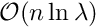
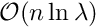

|
MIDAPACK - MIcrowave Data Analysis PACKage
1.1b
Parallel software tools for high performance CMB DA analysis
|
|
MIDAPACK - MIcrowave Data Analysis PACKage
1.1b
Parallel software tools for high performance CMB DA analysis
|
The package implements two algorithms for performing the operations.
The first algorithm is based on a shift-and-overlap approach, where a product of a single band-diagonal Toeplitz matrix by an arbitrary matrix is done as a sequence of products of a submatrix of the initial Toeplitz matrix by overlapping blocks of the arbitrary matrix. Each of the latter products is performed in turn by embedding the Toeplitz subblock in a minimal circulant matrix and performing the multiplication via Fast Fourier transforms. The size of the subblock can be set appropriately to optimize the calculation and typically is a function of the bandwith. Denoting by  a half bandwith, i.e., the full bandwidth is
a half bandwith, i.e., the full bandwidth is  , the overall complexity of the operation is , where
, the overall complexity of the operation is , where  is the size of the initial Toeplitz matrix.
is the size of the initial Toeplitz matrix.
Check Shift and overlap algorithm for more details.
The second algorithm is just a direct real space multiplication of a Toeplitz matrix by an arbitrary one. This approach has complexity  but much better prefactors and therefore can have superior performance over the previous one for very narrow bands.
but much better prefactors and therefore can have superior performance over the previous one for very narrow bands.
All the other operations implemented in the package are then expressed as the product of a Toeplitz matrix times a general matrix. This may in turn require on occasions some data objects reformatting (or as called hereafter - reshaping) operations.
The inter-process communication is required whenever the same Toeplitz matrix (or a Toeplitz block for Toeplitz block-diagonal cases) is to be applied to a segment of the data distributed over more than one process. These are implemented using MPI calls.
More details can be found here MPI communication patterns